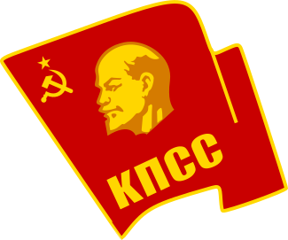

 Central Committee of the Communist Party of the Soviet Union
The Central Committee of the Communist Party of the Soviet Union was the executive leadership of the Communist Party of the Soviet Union, acting between sessions of Congress. According to party statutes, the committee directed all party and governmental activities. Its members were elected by the Party Congress.
--Wikipedia
Learn more on Wikipedia.
Communist Party of the Soviet Union
Contact: CandyDada@vip.qq.com or GitHub.
RIP  USSR 1922-1991.
USSR 1922-1991. 简体中文页面
简体中文页面
萌ICP备20221191号